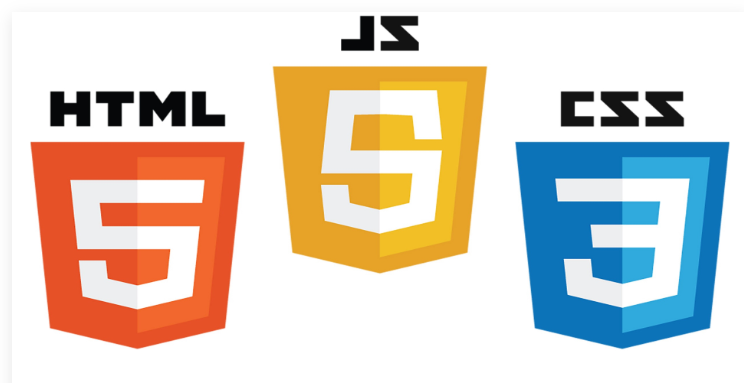

Web development არის პროცედურა რომელშიც ჩართულია ვებსაიტების შექმნა, დიზაინი და ინტერაქტიული ფუნქციები.
Front end შეიცავს დიზაინს, კონტენტს და საიტის ვიზუალურ ნაწილს.
Html არის საიტის სტრუქტურა
Css გამოიყენება დიზაინის შესაქმნელად
Js საიტს უმატებს ფუნქციებს